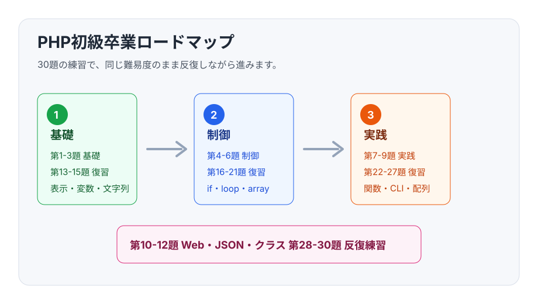

PHPの確認
php -v を実行します。
PHPだけで進める12回分の教材です。
問題、解答、卒業課題を一覧で確認できます。

問題を書き、解答例と比べます。
php -v を実行します。
TODOを読んでコードを書きます。
解答例と自分の書き方を比べます。
同じ問題をもう一度書き直します。
各回の問題と解答例をGitHubで開けます。PHPはGitHub Pages上では実行されません。
echo と改行を使って、画面に文字を表示します。
変数、数値計算、文字列結合を使って結果を表示します。
文字列埋め込み、文字数の取得、表示用の整形を練習します。
点数をもとに、if で合否や評価を判定します。
for と while で、同じ処理を繰り返します。
複数の点数を配列で扱い、合計、平均、最大、最小を出します。
よく使う処理を関数にまとめ、引数と戻り値を使います。
商品データとカートを連想配列で表し、小計と合計を出します。
コマンドライン引数を受け取り、入力チェックしてから処理します。
HTMLフォームから送られた値をPHPで処理し、BMIを計算します。
JSONファイルに日記データを保存し、あとから読み込みます。
クラスを使い、小さな図書管理アプリを作ります。
1日30分から60分を目安に、詰まったところを復習しながら進めます。
第1回から第3回。PHPの実行、変数、文字列に慣れます。
第4回から第6回。条件分岐、繰り返し、配列を練習します。
第7回から第9回。関数、連想配列、入力チェックを練習します。
第10回から第12回。Web、保存、クラスを使って卒業課題を作ります。
すべて説明できたら、PHP初級卒業です。